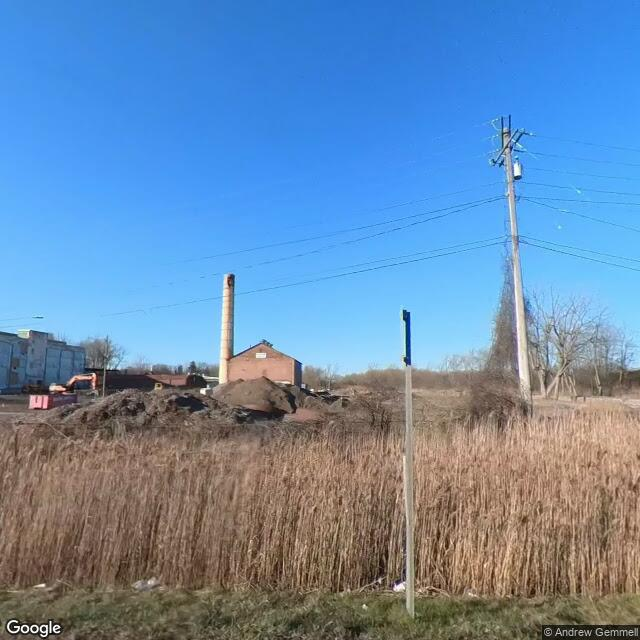

Property entry
2336-58 Park St
Published 2026-10-27T14:04:37+00:00
Parcel key: 0012-02-230

City records
Matches use parcel IDs or normalized property addresses. Nearby properties are not treated as matches. Records may include historical or closed cases; check each record's status and dates. Publication dates are not source-data dates.
Vacant properties 0
No matches stored for this feed. The feed or address matching may be incomplete; this is not confirmation that no records exist.
Records refreshed 2026-10-27.
Rental registry 0
No matches stored for this feed. The feed or address matching may be incomplete; this is not confirmation that no records exist.
Records refreshed 2026-10-27.
Code violations 0
No matches stored for this feed. The feed or address matching may be incomplete; this is not confirmation that no records exist.
Records refreshed 2026-10-27.
Unfit properties 0
No matches stored for this feed. The feed or address matching may be incomplete; this is not confirmation that no records exist.
Records refreshed 2026-10-27.
AI image observations (unverified)
These observations are generated from an image, not an inspection or an official code finding. No human verification is recorded here.
Image capture date: Not recorded. The entry publication date does not establish the age of the image.
Automated image description
The image displays a large lot characterized by extensive tall, dry vegetation, large earth piles, and visible structures, one of which appears to be undergoing demolition or is in significant disrepair.
Property type guess: vacant_lot
Visible conditions
- Extensive tall, dry vegetation covers a significant portion of the foreground and mid-ground.
- Large mounds of earth or debris are visible in the mid-ground.
- A brick building with a tall chimney is present in the background.
- Another structure to the left appears to be in a state of disrepair or partial demolition, with an excavator visible nearby.
Condition scores
- Roof
- unclear
- Siding Or Facade
- unclear
- Windows Doors
- not_visible
- Porch Or Entry
- not_visible
- Yard Or Lot
- poor
- Trash Debris
- none_visible
- Vegetation Overgrowth
- major
Visible flags
- Boarded Windows Or Doors
- no
- Fire Damage Visible
- no
- Structural Damage Visible
- yes
- Vacancy Signs Visible
- no
- Active Construction Visible
- yes
Possible image-only flags
- Extensive unmanaged vegetation is present across a large area of the lot.
- Large earth piles are visible, possibly indicating site work or debris accumulation.
- A structure on the property appears to be in a state of significant disrepair or partial demolition.
- Active site work or demolition activity is suggested by the presence of an excavator and earth piles.
AI review boxes
- Extensive vegetation overgrowth: Tall, dry, unmanaged vegetation covers a large portion of the foreground and mid-ground.
- Earth piles: Large mounds of earth or debris are visible in the mid-ground.
- Structure in disrepair/demolition: A structure on the left appears damaged or partially demolished, with an excavator nearby.
Review reasons
- AI requested human review
- Possible image-only issue
- active construction visible
- structural damage visible
Image quality
- Available
- True
- Bytes
- 58392
- Needs Rerun
- False
['The full extent and boundaries of the parcel are not clearly visible in the image.', 'The foreground vegetation partially obstructs the view of the ground level of structures further back.', 'The image appears to depict a large lot undergoing site work or demolition, making a precise assessment of individual building conditions challenging without more context.']
ACS tract context
Census Tract 1; Onondaga County; New York
- Total population
- 1225
- Median household income
- 91696
- Poverty rate
- 11.3
- Housing units
- 816
- Vacancy rate
- 2.8
- Renter-occupied share
- 7.8
- Median gross rent
- 353800
OpenStreetMap nearby
60 meter search radius
Nearby map data is temporarily unavailable. This does not mean there are no mapped features.